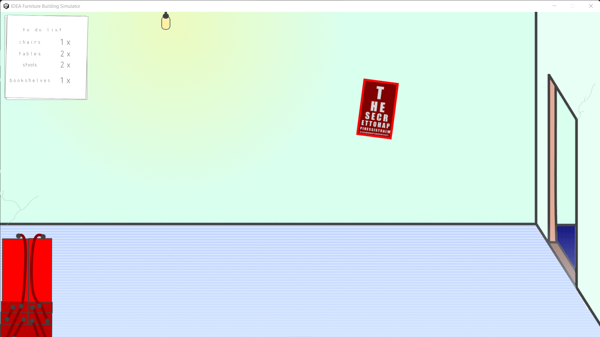
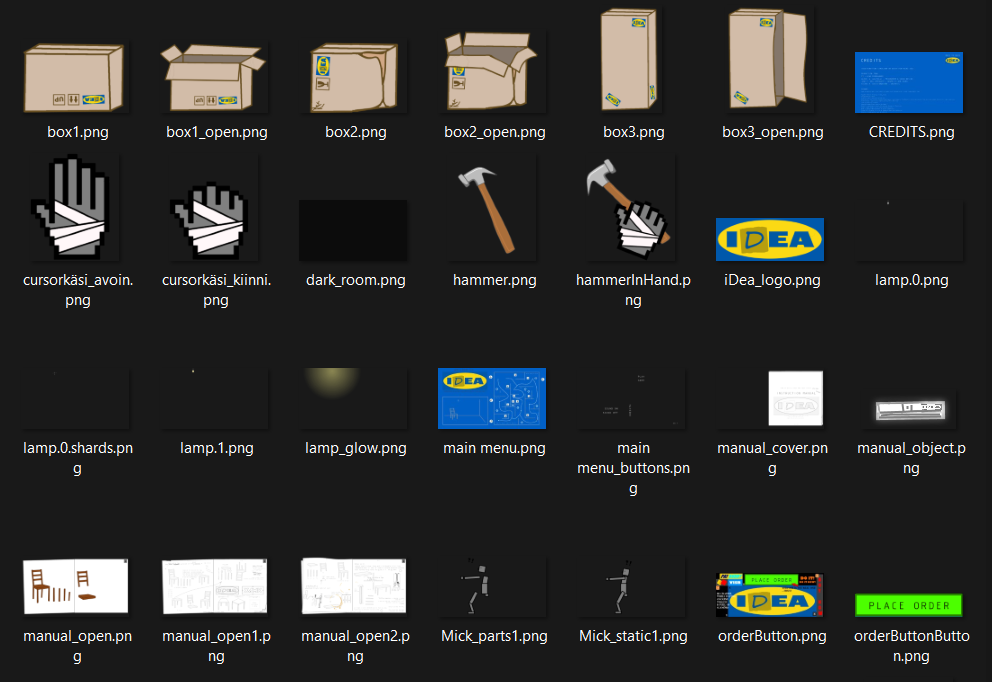
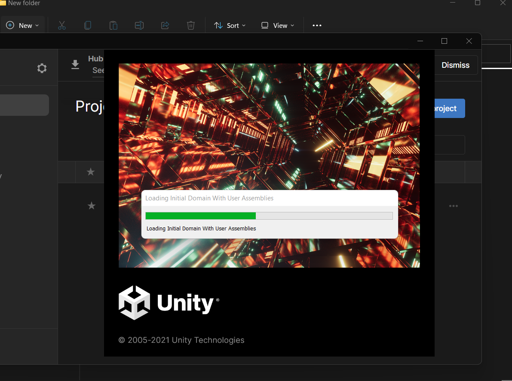
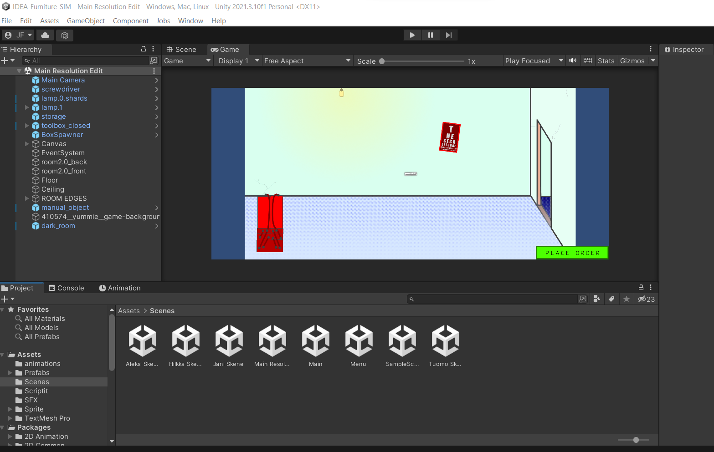
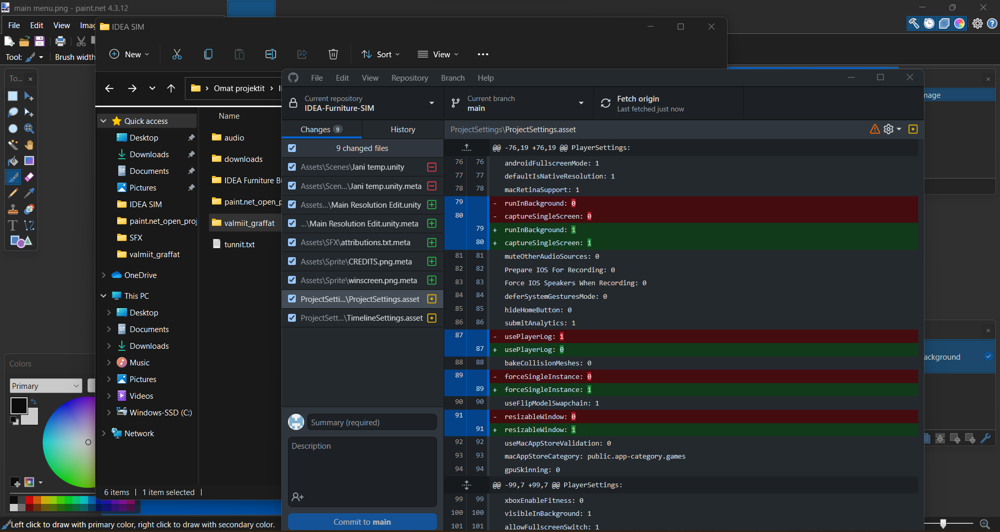

IDEA - Furniture Simulator

Production Team
TT - Programmer
Aleksi A. aka Rölli - Programmer
Jani F. aka Lyrenlute - Graphics
Hilkka H. aka Di$hwasher - Graphics
Status: Finished /Autumn 2022
Total work hours: 22
Tools: Unity, Visual Studio, Paint.net
Project Description
I took part in my first ever GameJam event that kicked off at 6pm on Friday the 23rd September 2022. I was part of a team of four first year game designer students at XAMK Kotka and our job was to make a functioning end product over the next 48 hours. Two of us were programmers and two were developers. I was in charge of attaining and/or making assets (both graphics and audio).
The theme for the event was "assembly & disassembly" and after an hour of brainstorming we had an idea of what direction we would head in. Due to the resources and skillsets (or lack thereof) available to the team we decided to go for a 2D physics simulator game in which the player is to assemble various furniture. We wanted to make the game a dash funny so we based the whole parody off of a renown furniture retail chain (in)famous for selling its furnitue in parts leaving the often confused customer to assemble it by themselves. The wacky physics and a well chosen soundtrack should finish the job.
By Sunday 6pm we had uploaded a somewhat playable version of something that had robbed us of sleep, tested our emotional endurance and rattled at our will to continue. However, we were all happy to have finished what we set out to do and I for one learned a lot over the weekend. How the game functions is best explained in the video below.
Gameplay video
Tasks
My job for this project was to ensure that the game graphics and sound had a uniform feel to them. Since we were making a 2D game with a simple cartoony look I decided to apply my earlier experience in graphics editting with paint.net. I started by making a list of the basic elements that were needed for the game to work. I consulted with the programming team asking which assets they required most urgently in order to use and test their code. Since we were using GitHub as our version control it was also possible for me to quickly create a temporary "placeholder" asset as long as it had the correct dimensions and then update it later once I had the time. I also acquired and formatted all the sound effects used.
Solving Problems
It seemed like most complications arose in the programming compartment with the frequent "Why is it doing that?" and "Why isn't it working now?" comments of increasing frustration as the deadline started to clamp down on us. I encouraged my coworkers, as any good software coworker would, to think of the bugs as features.
Playtesting and Future Development
Due to time constraints we were unable to thoroughly conduct playtesting. However, several senior students and fellow jammers tested our game. Most were amused by the silly physics and immersive audio and the lack of control seemed to build up a suitable amount of frustration mixed with accepting that the game is indeed nigh impossible to win. We do plan on contributing minimum effort in further development, mainly to fix the glitchy entanglement of objects and get the sounds to actually work reliably.
Project Reel

In-Game picture

Assets

Loading Unity

Unity UI

GitHub